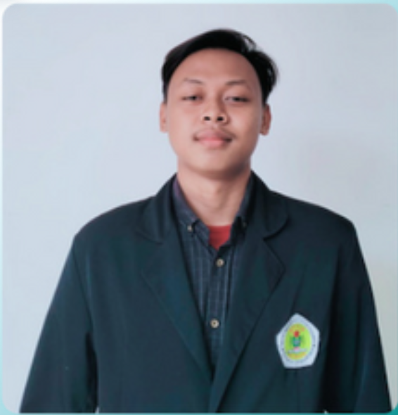
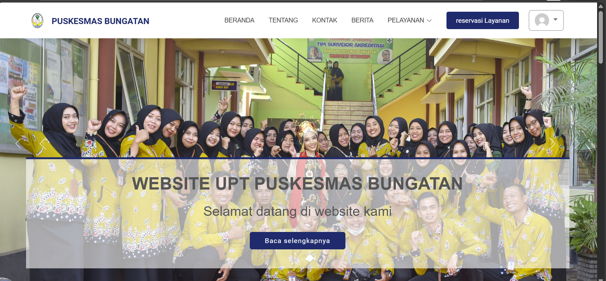
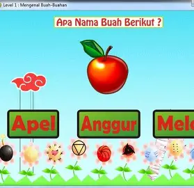
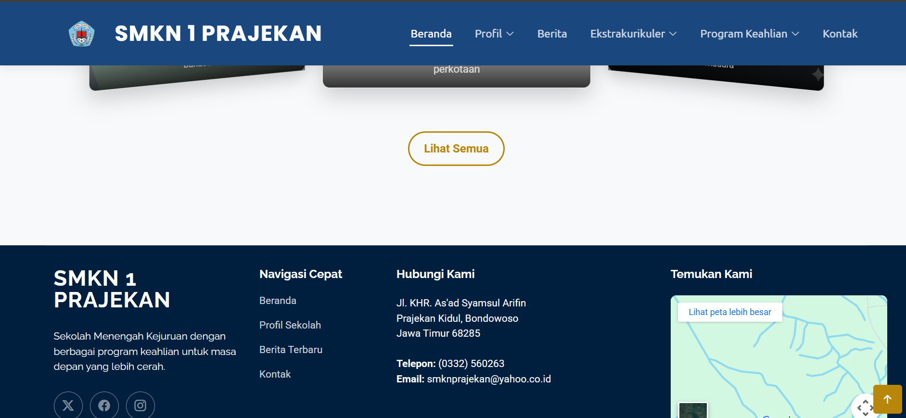

Halo, saya Samsul Arifin
Seorang Web Developer Pemula yang bersemangat membuat aplikasi web yang bersih dan modern.
Lihat Karya SayaTentang Saya
saya alumni smk (Tkj) saya pernah Magang di Toko Komputer tapi belakangan Ini saya mulai mendalami tentang Software Seperti Membuat Website,Membuat Aplikasi Walaupun Masih Jauh dari kata sempurna,dan Saya sekarang sedang Menempuh Pendidikan Sastra 1 dengan Prodi Pendidikan Teknologi Informasi
Teknologi yang Saya Kuasai
HTML5
CSS3
JavaScript
PHP
Laravel
Git
MySQL
Python
Hobi & Minat
Membaca
Menjelajahi dunia, ide-ide baru, dan memperluas wawasan melalui berbagai macam buku.
Olahraga
Menjaga kebugaran dan kesehatan fisik melalui berbagai aktivitas olahraga seperti lari,badminton dan lainnya.
Bermain Catur
Meningkatkan kemampuan berpikir strategis dan pemecahan masalah melalui permainan catur.
Proyek Saya

Membuat Web Puskesmas
Membuat Web Puskesmas Menggunakan Laravel.

Membuat Game Edukasi
Membuat Game Edukasi Sederhana Menggunakan Java.

Membuat Web Sekolah
Membuat Web sekolah Menggunakan Laravel.
Hubungi Saya
Anda dapat menghubungi saya melalui email atau media sosial di bawah ini.